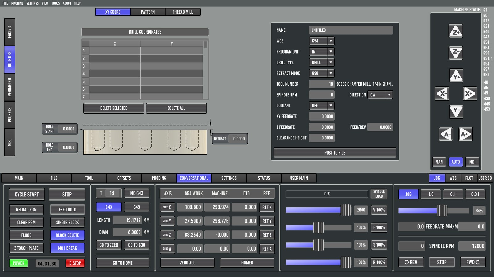

9. Conversational programming

The CONVERSATIONAL tab writes simple G-code from a form, with no CAM needed. Its pages:
| Page | Makes |
|---|---|
| FACING | A zig-zag facing program over a rectangle. Good for surfacing a wasteboard or squaring stock. |
| HOLE OPS | Drilling, peck drilling, tapping and boring cycles, at positions from XY COORD (a list of points) or PATTERN (bolt circles and grids). THREAD MILL generates helical thread milling. |
| PERIMETER | Profile operations. On the reference machine (Probe Basic 1.0.3) this page was still empty. |
| POCKETS | Rectangular and circular pockets. |
| MISC | Smaller utilities. |
The general flow:
- Fill in the tool (number, diameter), spindle speed, feeds, depths and stepovers.
- Fill in the geometry.
- Post the program to a file, or send it straight to the loaded program.
- Check it in the preview like any other program, then set the work offset and run.
On the 6040. The first real use of the machine after the LinuxCNC conversion was a FACING program to surface the wasteboard: a 1" (25.4 mm) 3-flute surfacing bit over the full usable table. The start and end values are in work coordinates, so set the work offset before filling in the form, and check the preview (PGM EXT) before running. A wrong sign or an end value outside the travel shows up immediately as a facing area hanging off the table.